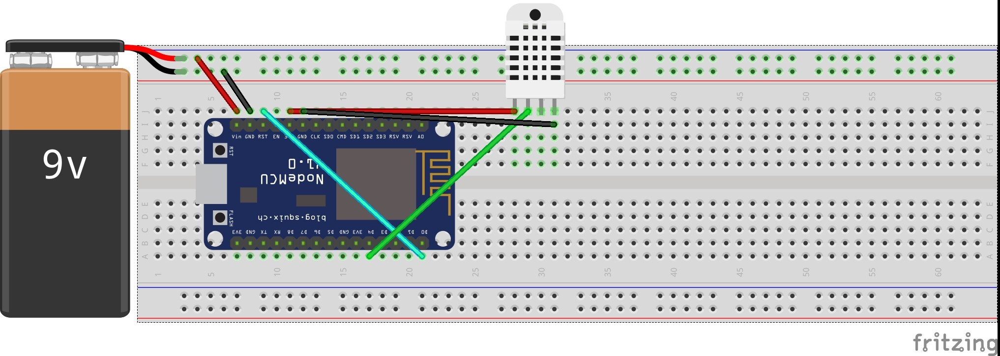

Welcome to the Esp8266Weather project
The ESP8266 is a really nice device when it comes to internet of things. Its really efficient and has a powerfull wireless chip on it.
This project is a Webservice for getting Weather Data from a ESP8266 equiped with a DHT-XX sensor.
Providing more Sensors is planned.
Overview
In this section the general build is described.
Whats needed?
Hardware
- A ESP8266 MCU (I used the Lolin NodeMCU DevKit v3.0 any other would work fine too)
- A DHT-XX Sensor (DHT-22 or DHT-11)
- Project board
Software
- Arduino 1.6.5
- ESP 8266 resources for Arduino
- Adafruit DHT sensor Library
Software Installation
Arduino
Install the IDE
- Download Arduino IDE from http://arduino.cc/download.php?f=/arduino-1.6.5-r5-windows.exe
- Run it with Admin rights
Install the ESP8266 Resources
- Open Preferences (File -> Preferences)
- In additional Board Manger URLs add "http://arduino.esp8266.com/staging/package_esp8266com_index.json"
- Restart IDE
- Open Boards Manager (Tools -> Boards -> Boards Manager)
- Search for ESP8266
- Install Latest
Install the DHT Libraries
- Download this "https://github.com/adafruit/DHT-sensor-library"
- Unzip it to "C:\Program Files (x86)\Arduino\libraries"
- Restart IDE
Hardware Installation
Build up the hardware like in the schematics below Read more in the Wiki https://github.com/kratostav/Esp8266Weather/wiki